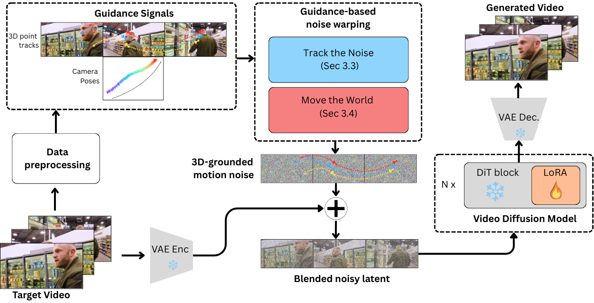

Qualcomm AI Research‡ · *Equal contribution · †Binh-Son Hua is affiliated with Trinity College Dublin, Ireland. Work done under consultancy capacity. · ‡Qualcomm AI Research is an initiative of Qualcomm Technologies, Inc.
{vlong, tanngo, karnewar, ahabibia, hson, hungbui, minhhoai, phongnh}@qti.qualcomm.com
Joint object + camera control through input-noise construction. Sparse 3D point tracks warp the noise locally; a virtual noise sphere fills newly revealed regions — no adapters, no control branches. Open teaser PDF ›
Modern image-and-text-to-video diffusion models synthesize realistic clips by iteratively denoising a Gaussian noise tensor conditioned on a reference image and a text prompt. Yet existing approaches still lack precise, unified control over both object motion and camera motion within a single generation pass.
We present UniCaMo, a unified framework that controls object trajectories and camera viewpoints simultaneously by directly constructing the input noise of the diffusion model. UniCaMo builds a shared 3D-grounded motion-consistent noise space across latent frames: sparse 3D point tracks warp the noise of the reference frame along object trajectories, while a virtual spherical noise representation provides globally consistent noise for newly revealed regions under camera motion.
Because UniCaMo modifies only the noise, it requires no auxiliary adapters, no control branches, and no architectural changes to the base model. With a lightweight LoRA on Wan 2.1 (14B), UniCaMo reaches state-of-the-art quality and controllability on MoveBench.
Two complementary noise-warping mechanisms compose a single 3D-grounded motion-consistent latent. Click any card to expand.

Project sparse 3D tracks to the latent grid and propagate noise by copying a 3×3 patch (R = 2) along each trajectory. Collisions resolved with a depth-aware z-buffer — the closer track wins, enforcing plausible occlusion.
Sparse tracks carry explicit depth, robust to occlusion and viewpoint change. The result is a partial, motion-visible noise prior that already encodes object dynamics before any denoising step is taken.
A virtual 3D sphere centered at the first camera, coated with a latitude–longitude Gaussian noise texture. For each frame, cast rays from the camera and sample noise at the sphere intersections — view-consistent noise for every direction.
Fills the regions track-the-noise cannot cover (disocclusion under camera motion). Sphere radius = max(α·trajectory-spread, scene-depth) with α = 1.2, guaranteeing the camera path stays inside.
Initialize the latent with Track-the-Noise; fill uncovered pixels with Move-the-World. A small Gaussian-noise blend (β = 0.2) restores temporal Gaussianity without hurting motion fidelity.
The constructed noise is spatially Gaussian by construction, but not temporally Gaussian; the β = 0.2 blend is the sweet spot in the paper's ablation — quality stays best while EPE drops.
Train LoRA rank 64 on Wan 2.1 I2V (14B) with flow matching, 10K steps. Preprocessing (ViPE depth/pose + TAPIP3D 3D tracks) is offline; at inference, the user draws 3D tracks in a 3D GUI and we warp the noise — ~0.2 s overhead, no extra parameters.
The same noise pipeline supports independent and joint control: motion-only, camera-only, or both. No control adapters, no flow networks, no inference-time modules added.
Four control modes our model supports. The same model handles motion, camera, joint, and complex 3D trajectories — click through all four tabs to see every example.
How the motion-consistent noise is built at training time and used at inference time.
Side-by-side against the closest baselines. Each row shares the same control signal; Wan-Move and Go-with-the-Flow use the same text prompt as ours. UniCaMo produces sharper detail, cleaner occlusion, and motion that actually follows the user's intent.
MoveBench evaluation against adapter-based and noise-warping baselines. UniCaMo is best on every quality and control-fidelity metric in both the single-object and multi-object splits.
| Method | FID (S) ↓ | FVD (S) ↓ | PSNR (S) ↑ | SSIM (S) ↑ | EPE (S) ↓ | FID (M) ↓ | FVD (M) ↓ | PSNR (M) ↑ | SSIM (M) ↑ | EPE (M) ↓ |
|---|---|---|---|---|---|---|---|---|---|---|
| ImageConductor | 34.51 | 424.1 | 13.4 | 0.49 | 15.66 | 77.5 | 764.5 | 13.9 | 0.51 | 9.80 |
| LeviTor | 18.12 | 98.8 | 15.6 | 0.54 | 3.40 | — | — | — | — | — |
| MagicMotion | 17.53 | 96.7 | 14.9 | 0.56 | 3.20 | — | — | — | — | — |
| Go-with-the-Flow | 12.49 | 216.9 | 15.8 | 0.62 | 3.04 | 35.7 | 399.4 | 16.9 | 0.60 | 3.71 |
| Tora | 22.57 | 100.4 | 15.7 | 0.55 | 3.30 | 53.2 | 350.0 | 14.5 | 0.54 | 3.50 |
| Wan-Move | 12.23 | 83.5 | 17.8 | 0.64 | 2.60 | 28.8 | 226.3 | 16.7 | 0.62 | 2.20 |
| Wan-Move + TAPIP3D | 12.11 | 87.1 | 18.1 | 0.67 | 2.54 | 27.6 | 294.8 | 16.5 | 0.65 | 2.14 |
| UniCaMo (Ours) | ★ 10.36 | ★ 78.6 | ★ 18.4 | ★ 0.73 | ★ 2.30 | ★ 26.1 | ★ 215.2 | ★ 18.15 | ★ 0.72 | ★ 1.92 |
(S) = single-object split; (M) = multi-object split. Green = best in column. Go-with-the-Flow did not produce meaningful outputs under MoveBench's joint-control protocol in either split.
Interactive UI for sketching the 3D point tracks that become the noise-construction control signal.
Video generated from the 3D track defined in the UI above. No additional conditioning; the track alone drives the warped noise.
Page layout adapted from the Academic Project Page Template (in turn adopted from Nerfies). Released under CC BY-NC-SA 4.0.